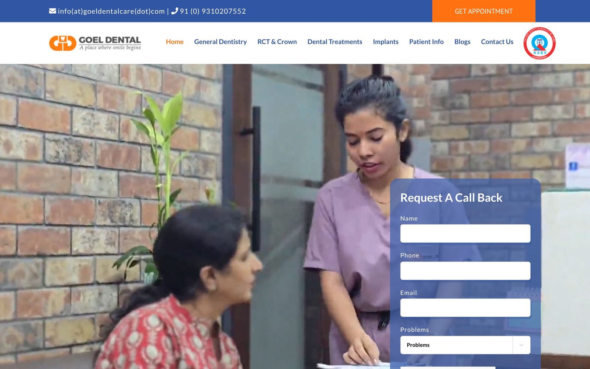
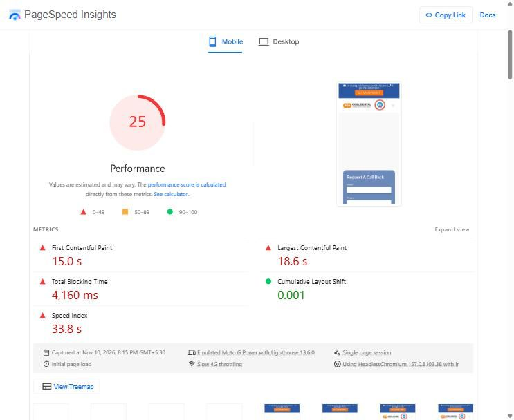
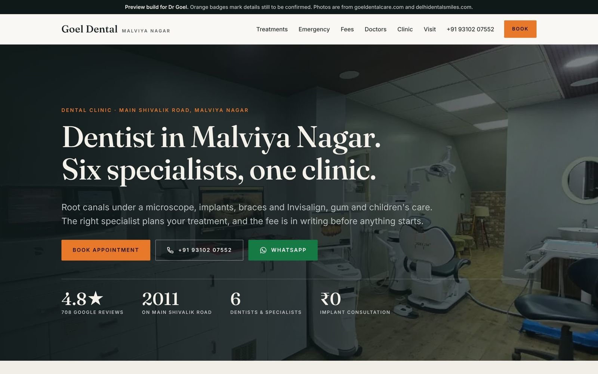
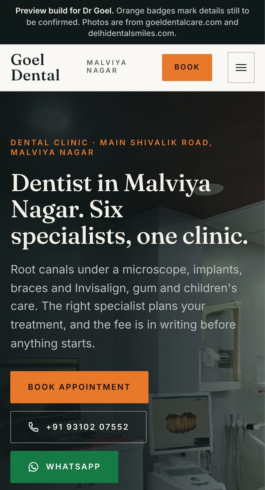
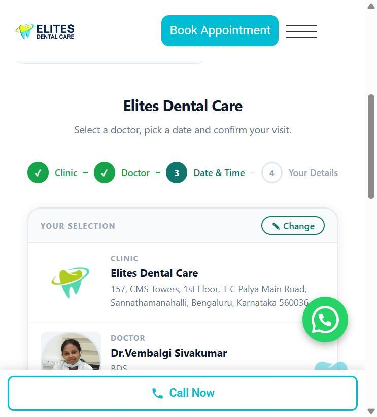
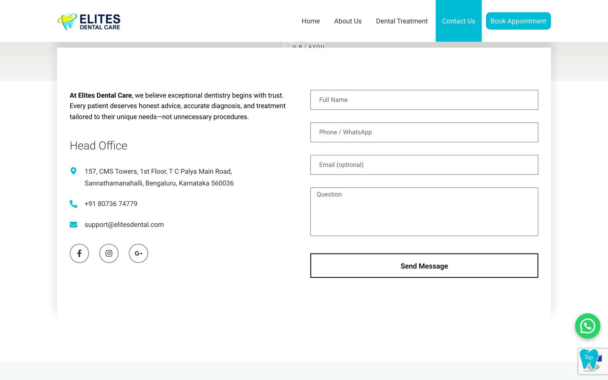
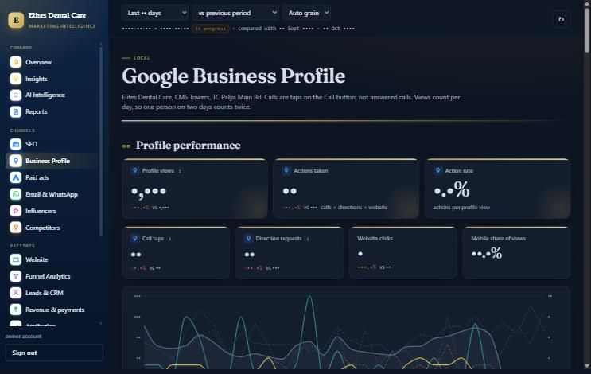
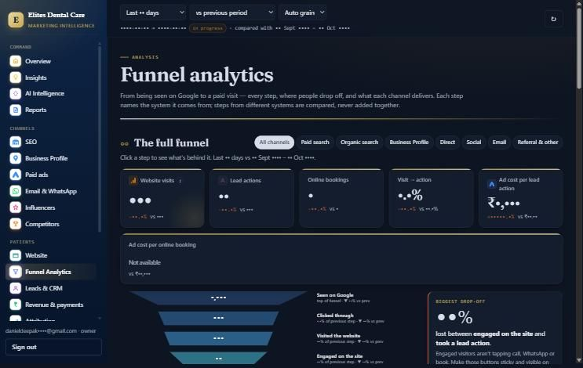
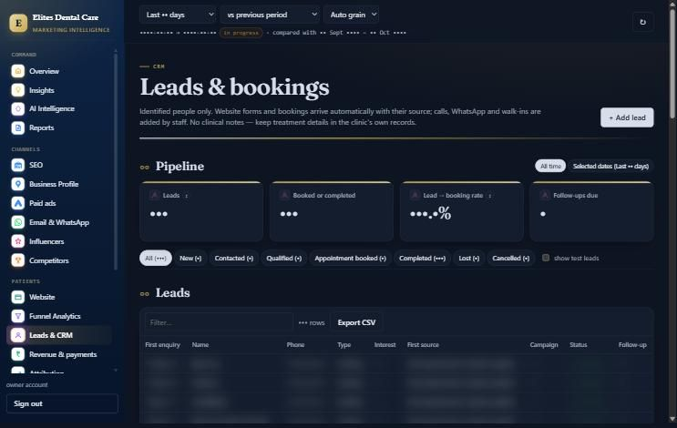

Goel Dental Care · Malviya Nagar · Implementation blueprint
After you pay for the website, exactly what gets built, connected, tracked, tested, deployed and monitored.
A visual map of the full system: website, WordPress, WhatsApp, booking, GA4, Tag Manager, SEO, Google and Apple Maps, speed, QA, launch and monitoring. Shown against a system already running at Elites Dental Care, Bengaluru.
26
Implementation steps
1
Website in scope: goeldentalcare.com
Live
Reference system: elitesdental.com
Daniel Deepak
Performance marketing & growth · 10 Nov 2026
02The short answer
Six things happen after the website is approved.
What exactly will you do after building the pages?
Build
WordPress website, 16+ pages
Treatment & doctor pages
Mobile sticky Call · WhatsApp · Book
Booking page
Forms with consent
Connect
WhatsApp (tracked)
Booking system
Google Business Profile
Apple Business Connect
Search Console
CRM / lead sheet
Track
Google Tag Manager
GA4 events + key events
Google Ads conversions
UTM + click IDs on every lead
Enquiry reference code
Test
Mobile + desktop
Every button and form
Every tracking event
PageSpeed + Core Web Vitals
Schema + SEO
Deploy
Staging site first
Domain + SSL
301 redirects from old pages
Sitemap to Google
Backups on
Monitor
Tracking health
Search Console errors
Speed after changes
Leads vs bookings
Monthly report
The pages are one part. The rest of this document shows each of the other parts with a diagram, a real example from a clinic system already running, and what changes for Goel Dental Care.
Goel Dental Care · Website & Marketing Technology Implementation BlueprintPrepared by Daniel Deepak · 10 Nov 2026 · 02
03How to read this
Labels used on every page.
What is already real, and what is proposed?
Label
Meaning
EXISTING
Already in place today (at Goel, or at Elites where stated)
VERIFIED
Checked directly on 9–10 Nov 2026
REQUIRED
Needed for the system to work
RECOMMENDED
Strongly advised; can be phased
OPTIONAL
Add later if useful
PROPOSED
Planned for Goel; not built yet
CLIENT INPUT
Needs a decision or information from the clinic
EXISTING
Reference project: Elites Dental Care, Bengaluru
elitesdental.com · TC Palya. A WordPress dental website plus a marketing dashboard and CRM that I built and run. Every Elites screenshot here is real, captured 10 Nov 2026. Business figures and patient names are blurred, because they belong to that clinic.
PROPOSED
This project: Goel Dental Care
goeldentalcare.com · Malviya Nagar. One website only. Prototype already on GitHub. Everything else here is the plan, labelled PROPOSED.
What this document does not do
It does not promise rankings, leads, revenue or a PageSpeed score. It shows what is built and how each result gets measured.
Goel Dental Care · Website & Marketing Technology Implementation BlueprintPrepared by Daniel Deepak · 10 Nov 2026 · 03
04Starting point
Where the website is today, and the prototype already built.
What is wrong with the current site, and what has been built so far?
EXISTINGgoeldentalcare.com today
goeldentalcare.com

DesktopMobile

Google PageSpeed, mobile, 10 Nov 2026: Performance 25. Content appears after 15 s; largest image after 18.6 s.
EXISTINGPrototype on GitHub (preview only)
dannygrowthmarketing.github.io/goel-dental

Desktop

Mobile
Checked 9–10 Nov
Today
Prototype
WhatsApp button
None
Every page
Sticky mobile Call / WhatsApp / Book
No
Yes
Google Tag Manager
No
dataLayer ready
GA4 tags
2 different IDs
1 (planned)
Images missing alt text
28 of 30
0
Ads conversions recording
0 of 19
Events built in
Goel Dental Care · Website & Marketing Technology Implementation BlueprintPrepared by Daniel Deepak · 10 Nov 2026 · 04
05Architecture · actual
What actually exists today.
What is the real setup right now, not an assumed one?
Prototype (built)
GitHub repositorydannygrowthmarketing/goel-dental
↓
CodeSelf-contained HTML + CSS + JS · Python build
↓
GitHub PagesFree static hosting · auto-deploys from main
The repository, 10 Nov 2026. Public, noindex, so the preview never competes with the live site on Google.
Live clinic website (today)
goeldentalcare.comCustom HTML pages (~60)
↓
HostingProvider not yet confirmed
↓
Tracking2 GA4 IDs + Google Ads tag; no GTM; no Meta Pixel
↓
Google Ads account598-498-3497 · paused · ₹29,297 overdue
Not connected today: Tag Manager, WhatsApp, a booking system, a CRM, Search Console access, call tracking. 0 of 19 Google Ads conversion actions are recording.
Not used: Firebase, Vercel or any API backend for this site. Nothing in this plan requires them.
Hi Goel Dental, I'd like to book for Root canal treatment. (Ref GD-7K2PQ)
The reference code is created on the website visit. Staff note it in the lead sheet, so the chat can be matched back to the ad or search that brought the patient.
What is needed
Item
Status
WhatsApp Business number
CLIENT INPUT
Joinchat (or equivalent) on WordPress
REQUIRED
Reply-time standard for staff
CLIENT INPUT
Quick replies: hours, fees, directions
RECOMMENDED
WhatsApp Business API / automation
OPTIONAL
Goel Dental Care · Website & Marketing Technology Implementation BlueprintPrepared by Daniel Deepak · 10 Nov 2026 · 13
// elitesdental.com · WPCode snippet 18950 (excerpt) · liveif (WA.test(href)) {
send('whatsapp_click', { link_url: href, page_path, link_text });
ads(ADS_WHATSAPP, 'wa'); // Google Ads conversion
}
// Joinchat opens WhatsApp with window.open, so that is caught too
window.open = function (url) { if (WA.test(url)) send('whatsapp_click', …) }
Elites sends events with gtag directly; Goel will use Tag Manager instead, so tags can change without editing code.
What it can and cannot tell you
Measured
Not measured
The tap, page, treatment, campaign
Whether the patient actually pressed Send
Device type, time of day
What was written in the chat
Count per channel
Whether they booked, unless staff log it
That gap is why each chat carries a reference code and gets logged in the lead sheet.
Goel Dental Care · Website & Marketing Technology Implementation BlueprintPrepared by Daniel Deepak · 10 Nov 2026 · 15
16Chatbot
A chatbot answers routine questions and hands off to a person.
What would a chatbot do, and what data does it touch?
WebsitePatient opens chat
→
ChatbotGreets, offers optionsPROPOSED
→
QuestionHours · fees · location · treatment
→
IntentBook · ask · emergency
→
CollectName + mobile only
→
Hand-offBooking page · WhatsApp · call
Can be tracked (website analytics)
chatbot_open
option chosen (e.g. 'fees')
chatbot_handoff to WhatsApp / booking
page it started on
Stays in the clinic's systems only
Name and mobile number
The chat transcript
Anything typed about symptoms
Never sent to GA4 or ad platforms
Symptoms, conditions, medicines
Names, phone numbers, emails
Free-text messages
Scope: FAQ answers and routing only. No diagnosis, no treatment advice. Emergencies are told to call. Tool to be selected based on final functional requirements. OPTIONAL
Goel Dental Care · Website & Marketing Technology Implementation BlueprintPrepared by Daniel Deepak · 10 Nov 2026 · 16
17Appointment booking
The booking journey, and who can measure each step.
What happens when someone books, and after?
01Website
Website
02Appointment page
Website
03ServiceRoot canal, cleaning…
Website, if supported
04Date / time
Website, if supported
05Patient detailsName, mobile
Website, if supported
06Submit
Website
07ConfirmationOn screen + WhatsApp
Website
08Clinic notifiedEmail / dashboard
Booking system
09Appointment
Booking system
10Visit
Staff / CRM
11Follow-up
Staff / CRM
12Review / recall
Staff / CRM
Website can measure
Page views, start, submit, confirmation. Middle steps only if the booking tool exposes them.
Booking system knows
The appointment, the slot, the doctor, cancellations.
Only staff can confirm
Did they arrive? Was treatment done? What was the value? Logged in the lead sheet / CRM.
Most clinics lose sight of the patient after "Submit". Steps 08–12 are where this plan connects the website to what happens in the clinic.
Goel Dental Care · Website & Marketing Technology Implementation BlueprintPrepared by Daniel Deepak · 10 Nov 2026 · 17
18Booking · reference & options
How booking works at Elites, and the options for Goel.
Which booking system, and what can it track?

Elites, live: Click4Appointment, 4 steps: Clinic → Doctor → Date & time → Your details.
Elites Dental Care · liveBooking widget embedded on /appointment-form/EXISTING
→
What this demonstratesA real booking can fire a conversion only when the booking system confirms success
→
Goel Dental CareSame principle, system to be chosenPROPOSED
→
Technical connectionBooking API success → appointment_confirmed → GA4 + Ads
Option for Goel
How it works
What the website can track
Status
A. Third-party booking widget (e.g. Click4Appointment, as Elites)
Live slots from the clinic calendar
Page view, start, confirmed booking (if the widget exposes a success signal)
CLIENT INPUT
B. WordPress booking plugin
Slots managed inside WordPress
Each step, submit, confirmation
Plugin to be selected
C. Appointment request form (prototype)
Patient picks a preferred time; front desk confirms
Start, submit, confirmation: fully trackable
EXISTING
Real detail from Elites: booking confirmation is detected by watching the booking system's own success response, then appointment_confirmed is sent to GA4 and a conversion to Google Ads.
Goel Dental Care · Website & Marketing Technology Implementation BlueprintPrepared by Daniel Deepak · 10 Nov 2026 · 18
19Booking event map
Booking events, named before anything is built.
Which booking steps get their own event?
booking_page_viewBooking page openedVERIFIED
→
booking_startFirst field or step touched
→
booking_stepStep 2, 3… (if supported)
→
booking_submitPatient presses Request / Confirm
→
booking_completeSystem confirms success
Event
Option A widget
Option B plugin
Option C request form
Conversion?
booking_page_view
Yes
Yes
Yes
No
booking_start
Depends on widget
Yes
Yes
No
booking_step
Depends on widget
Usually
Yes (prototype has steps)
No
booking_submit
Depends on widget
Yes
Yes
No
booking_complete
If success signal exists (Elites: yes)
Yes
Yes
Yes · key event
EXISTING
Prototype already fires these
appointment_start → appointment_step → appointment_submit → booking_confirmation, with a lead ID. Names will be aligned to this map.
REQUIRED
No patient data in events
Events carry the treatment category and a lead ID. Never the name, phone or symptoms.
Goel Dental Care · Website & Marketing Technology Implementation BlueprintPrepared by Daniel Deepak · 10 Nov 2026 · 19
20Forms
Short forms that carry their source with them.
What happens when someone fills a form?
elitesdental.com/contact-us

Elites, live: Elementor Pro contact form.
Form shown
→
form_startfirst field
→
Submitvalidated
→
form_submitGA4 event
→
Lead storedwith source
Field
Seen by patient
Goes to
Name
Yes
Clinic email + lead sheet
Mobile (+91, 10-digit check)
Yes
Clinic email + lead sheet
Consent tick
Yes
Lead sheet
utm_source / campaign / term
Hidden
Lead sheet only
gclid / fbclid
Hidden
Lead sheet → offline conversions
Landing page, first + last visit
Hidden
Lead sheet only
Real at Elites: a WPCode snippet adds first-touch and latest-touch source as a hidden field to every Elementor form, and a server-side relay sends each submission to the CRM.
Goel Dental Care · Website & Marketing Technology Implementation BlueprintPrepared by Daniel Deepak · 10 Nov 2026 · 20
21Patient journey
The whole patient journey, on one page.
Where does a patient come from, and where do they go?
01 · Discovery
Google Search
Google Ads
Google Business Profile
Apple Maps
Meta Ads
Instagram / social
Referral
Direct
02 · Website
Homepage
Treatment page
Doctor page
Ad landing page
Fees
Contact
03 · Engagement
Scroll
Symptom picker
FAQ open
CTA tap
Chatbot
04 · Contact
WhatsApp
Phone call
Form
Booking
05 · Conversion
Lead
Appointment request
Booking confirmed
06 · Clinic
Appointment
Visit
Consultation
Treatment
07 · Post-visit
Follow-up
Google review
Recall (6-month)
Repeat appointment
08 · Marketing
Audiences
Campaigns
Retargeting where allowed
SEO
Paid media
CRO
09 · Measurement
GA4
GTM
Search Console
Google Ads
Lead sheet / CRM
Monthly report
Today, Goel can see:✓ Ad clicks✓ Website visits✕ Which chat came from which ad✕ Calls from the website✕ Bookings✕ Visits✕ Treatment value per channel
Goel Dental Care · Website & Marketing Technology Implementation BlueprintPrepared by Daniel Deepak · 10 Nov 2026 · 21
Lead row with source + ref code + first-reply time
Lead sheet / CRM
REQUIRED
Appointment
Slot confirmed
Status: Booked
CRM / booking system
REQUIRED
Visit + treatment
Patient comes in
Status: Came · Treated · ₹ value (no clinical notes)
CRM
RECOMMENDED
Post-visit
Review + recall
Review link sent · recall date
CRM · GBP
RECOMMENDED
Back to marketing
Spend follows results
Offline conversions to Google Ads
Ads
RECOMMENDED
The point: each row passes the same reference code and source forward, so a treated patient can be traced back to the search, ad or map listing that started it.
Goel Dental Care · Website & Marketing Technology Implementation BlueprintPrepared by Daniel Deepak · 10 Nov 2026 · 22
23GA4
How GA4 turns visits into decisions.
What does GA4 actually do here?
Websitegoeldentalcare.com
→
GTMdecides what to send
→
GA4one property
→
Eventsevery action
→
Key eventsthe few that matter
→
Reportsby channel, page, treatment
→
Decisionsbudget, pages, hours
Events (counted, not conversions)
Event
When
page_view
Every page
service_view
Treatment page opened
cta_click
Any Book / Call / WhatsApp button
faq_open
A question expanded
booking_start
Booking begun
directions_click
Maps link tapped
Key events (conversions)
Key event
Why it matters
whatsapp_click
Patient chose to message
phone_click
Patient chose to call
form_submit
Call-back requested
booking_complete
Appointment confirmed
Landing pages are a GA4 report dimension, not a separate event; no extra tag needed.
Today at Goel: two different GA4 IDs on the site. One property will be kept.
Goel Dental Care · Website & Marketing Technology Implementation BlueprintPrepared by Daniel Deepak · 10 Nov 2026 · 23
24Google Tag Manager
How Tag Manager sends each action to GA4.
How does GTM send the event to GA4?
User actiontap / submit
→
GTM triggerrule that matches it
→
GTM tagGA4 event tag
→
GA4 eventnamed + parameters
→
ReportExplore / dashboards
→
Conversionif marked key event
WhatsApp button
Tap
→
Click URL contains wa.me
→
GA4 event tag
→
whatsapp_click
→
Key event
Phone
Tap number
→
Click URL starts tel:
→
GA4 event tag
→
phone_click
→
Key event
Form
Submit
→
dataLayer: form_submit
→
GA4 event tag
→
form_submit
→
Key event
Booking
Confirmed
→
dataLayer: booking_complete
→
GA4 + Ads tags
→
booking_complete
→
Key event
Chatbot: only if the chosen tool emits browser events (open / hand-off). If it doesn't, it is not tracked and the report says so.
Goel Dental Care · Website & Marketing Technology Implementation BlueprintPrepared by Daniel Deepak · 10 Nov 2026 · 24
25Event tracking matrix
Every tracked action, in one table.
What exactly is tracked?
User action
Event name
Trigger
Tool
Destination
Conversion?
Business meaning
WhatsApp tap
whatsapp_click
Click URL matches wa.me / api.whatsapp
GTM
GA4 → Google Ads
Yes
Patient chose to message
Phone tap
phone_click
Click URL starts tel:
GTM
GA4 → Google Ads
Yes
Patient chose to call (not proof the call connected)
Contact / call-back form
form_submit
dataLayer push on valid submit
GTM
GA4 → Ads; lead sheet
Yes
Named lead with source
Booking opened
booking_start
First interaction on booking page
GTM
GA4
No
Intent; finds drop-off
Booking confirmed
booking_complete
Booking system success signal
GTM / snippet
GA4 → Ads; CRM
Yes
Appointment requested
Landing page
(dimension)
Built into GA4
GA4
GA4
No
Which page brings leads
Treatment page
service_view
Page type = treatment
GTM
GA4
No
Interest by treatment
Any CTA
cta_click
Elements with data-cta
GTM
GA4
No
Which button positions work
Directions
directions_click
Maps link
GTM
GA4
Optional
Visit intent
Chatbot
chatbot_open / chatbot_handoff
Only if the tool exposes events
GTM
GA4
Optional
Self-service questions
Visit / treatment
appointment_completed / treatment_completed
Staff update in CRM
CRM
Offline import to Ads
Later
Actual patients and value
No event is claimed unless the final tool supports it. Names are final before build so reports stay comparable over time.
Goel Dental Care · Website & Marketing Technology Implementation BlueprintPrepared by Daniel Deepak · 10 Nov 2026 · 25
A real lesson, visible on the screenshot: "No GA4 key events are marked in this property." Events were firing, but GA4 wasn't told which ones count as conversions. For Goel, marking key events is a launch checklist item (p. 39).
Live tracking snippets at Elites (WPCode list, 10 Nov)
Goel Dental Care · Website & Marketing Technology Implementation BlueprintPrepared by Daniel Deepak · 10 Nov 2026 · 29
30Technical SEO
One page, done properly.
What does good on-page SEO look like?
Element
Goel root canal page (planned)
URL
/root-canal-treatment/
Title
Root Canal Treatment in Malviya Nagar | Goel Dental
Meta description
Root canal by an endodontist in Malviya Nagar. Single-sitting and microscope options. Fees published.
H1
Root canal treatment in Malviya Nagar
H2s
Signs · Process · Pain · Aftercare · Cost · Doctor · FAQ
Primary keyword
root canal malviya nagar
Internal links
Emergency · Crowns · Dr Shikha Goel · Fees
Image alt
"Dr Shikha Goel using the dental microscope"
Schema
MedicalProcedure + FAQPage + BreadcrumbList
Today on goeldentalcare.com (verified)
H1: "Goel Dental|Best Dental Clinic in South Delhi"
28 of 30 homepage images have no alt text
136 scripts on the homepage
No Dentist schema
VERIFIED
Evidence the clinic's searches support it
In the clinic's own Google Ads history, searches containing "malviya nagar" converted at 2–3%; "with fees" at 3.1%. Pages are built around those searches.
Not promised
Rankings depend on Google and competitors. This builds the foundation and measures progress in Search Console.
Goel Dental Care · Website & Marketing Technology Implementation BlueprintPrepared by Daniel Deepak · 10 Nov 2026 · 30
// Live on elitesdental.com (excerpt) · added via WPCode
{
"@type": "Dentist",
"name": "Elites Dental Care",
"address": { "157, CMS Towers, TC Palya Main Road…" },
"openingHoursSpecification": [ Mon–Sat 10:00–20:30, Sun 11:00–19:00 ],
"areaServed": ["TC Palya", "KR Puram", "Ramamurthy Nagar", …],
"medicalSpecialty": ["Endodontics", "Orthodontics", …],
"hasMap": "https://maps.google.com/?cid=…"
}
Planned for Goel
Schema type
Where
Status
Dentist (LocalBusiness)
Home, contact
REQUIRED
MedicalProcedure
Each treatment page
REQUIRED
Person (doctor)
Doctor pages
RECOMMENDED
BreadcrumbList
All inner pages
REQUIRED
FAQPage
Pages with real FAQs
OPTIONAL
Only facts the clinic confirms go into schema. FAQ rich results are limited by Google to authoritative health and government sites, so FAQ markup is for clarity, not a guaranteed display.
Goel Dental Care · Website & Marketing Technology Implementation BlueprintPrepared by Daniel Deepak · 10 Nov 2026 · 31
32Google Business Profile
The clinic's listing on Google Search and Maps.
How does the website connect to Google Maps?
Goel Dentalthe clinic
→
Business Profileverified listing
→
Google Searchlocal results
→
Google Mapsmap pack
→
WebsiteUTM-tagged link
→
Call · Directions · Website · Book
Profile item
Today (verified)
Action
Business name
Goel Dental
Keep identical everywhere
Address
"Lower Ground" on GBP vs "Ground Floor" on site
One version CLIENT INPUT
Phone
88269 48621 on GBP; 93102 07552 on site
One primary number CLIENT INPUT
Hours
Friday differs across listings
One schedule + holidays
Website link
No tracking
?utm_source=gbp&utm_medium=organic
Services
—
Mirror the treatment pages
Photos
—
Real clinic photos, monthly
Reviews
4.8★ · 708
Ask every patient; reply to all

Elites dashboard → Business Profile: views, calls, direction requests, website clicks. Figures blurred.
Goel Dental Care · Website & Marketing Technology Implementation BlueprintPrepared by Daniel Deepak · 10 Nov 2026 · 32
33Apple Business Connect / Apple Maps
The same clinic, listed properly on Apple Maps.
How does the website connect to Apple Maps, and what can we see?
Goel Dental
→
Apple Business Connectfree · businessconnect.apple.comPROPOSED
→
Apple MapsiPhone, Siri, Safari
→
Patient finds clinicplace card
→
Website · Call · Directions
Profile setup
Business name (identical to Google)
Address + exact map pin
Phone
Website (UTM: utm_source=apple_maps)
Hours incl. holidays
Category: Dentist
Photos + logo
Verification by Apple
Apple Maps visibility ≠ a list of Apple users
We cannot get Apple IDs, personal accounts, names or a list of people who viewed the clinic. Apple does not share this, and we would not ask.
What is available
Apple's own aggregate insights in Business Connect (e.g. views, taps for directions, calls, website)
Visits arriving with utm_source=apple_maps, counted in GA4
Enquiries from those visits, counted like any other channel
Goel Dental Care · Website & Marketing Technology Implementation BlueprintPrepared by Daniel Deepak · 10 Nov 2026 · 33
34iOS vs Android
What analytics can measure on iPhones and Android phones.
What can we track from iOS users?
iOS / iPhone
Device category, OS, browser: aggregate
Sessions, pages, events
Conversions on the website, where measurable
Share of traffic and leads by device
Android
Device category, OS, browser: aggregate
Sessions, pages, events
Conversions on the website, where measurable
Share of traffic and leads by device
Safari privacy (iOS + Mac)
Shortens how long script-set cookies last, and in some contexts (e.g. Private Browsing, links from Mail and Messages) removes ad click IDs from links. Some return visits look new.
App tracking permission (iOS)
Inside apps like Instagram, users can refuse tracking. Meta reports become modelled estimates.
What we never do
Identify individual people, fingerprint devices, or link analytics to a named patient. Reports are counts and trends.
Practical result: compare iOS vs Android share of visits and enquiries, not individual journeys.
Goel Dental Care · Website & Marketing Technology Implementation BlueprintPrepared by Daniel Deepak · 10 Nov 2026 · 34
No specific PageSpeed score is promised. Each fix is measured before and after, on the same tool.
Goel Dental Care · Website & Marketing Technology Implementation BlueprintPrepared by Daniel Deepak · 10 Nov 2026 · 36
37Security + backups
Keeping the site safe and recoverable.
What if the site breaks or gets hacked?
Website
→
SSLhttps on every page
→
Securityfirewall, login limits, 2FA
→
Backupsdaily, off-site
→
Updatescore, theme, plugins
→
Monitoringuptime + errors
→
Recoveryrestore tested
REQUIRED
Initial implementation (in website project)
SSL certificate + https redirects
Admin accounts: named users, strong passwords, 2FA
Security plugin / host firewall configured
Backups scheduled + one restore test
Unused plugins and themes removed
Form spam protection
RECOMMENDED
Ongoing maintenance (after launch)
Monthly updates with backup first
Uptime monitoring
Plugin licence renewals
Quarterly restore test
User access review
Goel Dental Care · Website & Marketing Technology Implementation BlueprintPrepared by Daniel Deepak · 10 Nov 2026 · 37
38Deployment
How the site goes live.
What happens on deployment day?
Actual today
GitHub repositorydannygrowthmarketing/goel-dental
↓
Push to main
↓
GitHub Pages buildsautomatic
↓
Preview URLnoindex
EXISTING Working now. Firebase / Vercel are not used and not needed.
Reference: Elites
WordPress on Hostingerinferred from installed Hostinger plugins
↓
Domain elitesdental.com
↓
LiteSpeed Cache
Proposed for Goel
GitHubdesign + tracking code
↓
Staging WordPressprivate review copy
↓
QA sign-offchecklist p. 39
↓
Production hostmanaged WordPress CLIENT INPUT
↓
Domain + DNSgoeldentalcare.com
↓
301 redirectsold .html → new pages
↓
Live websitesitemap to Search Console
Goel Dental Care · Website & Marketing Technology Implementation BlueprintPrepared by Daniel Deepak · 10 Nov 2026 · 38
39QA testing
The launch checklist. Nothing goes live until every box is ticked.
How do we know everything works?
Devices
Mobile (Android + iPhone)
Desktop
Chrome · Safari · Edge · Firefox
Contact
Forms send + arrive
WhatsApp opens with text
Phone taps dial
Booking end to end
Chatbot hand-off
Tracking
GTM preview: every tag
GA4 DebugView: every event
Key events marked
Google Ads conversions received
Search Console verified
SEO
Titles + descriptions
Schema validated
Sitemap + robots
301 redirects
No broken links
Quality
PageSpeed mobile + desktop
Core Web Vitals
SSL everywhere
Images compressed
Accessibility basics
Tracking validation: 10 test enquiries per channel (WhatsApp, call, form, booking) are made before launch and matched in GA4, Google Ads and the lead sheet. Test leads are flagged and excluded from reports.
Goel Dental Care · Website & Marketing Technology Implementation BlueprintPrepared by Daniel Deepak · 10 Nov 2026 · 39
40Post-launch
What is watched after launch.
What do we monitor after launch?
Launch
→
Technical monitoringuptime, errors
→
Tracking checkevents still firing
→
Search Consoleindexing, errors
→
GA4traffic, key events
→
Conversionsleads vs bookings
→
Page speedafter each change
→
SEOqueries, pages
→
Optimisation
→
Repeat
REQUIRED
Launch work · part of the website project
First 30 days: daily tracking check, weekly speed check
Fix anything found in Search Console coverage
Confirm redirects caught old URLs
Hand-over: logins, plugin list, how to edit pages
One training session for the front desk (lead sheet + WhatsApp)
Goel Dental Care · Website & Marketing Technology Implementation BlueprintPrepared by Daniel Deepak · 10 Nov 2026 · 40
41Patient data architecture
Three kinds of data, kept apart.
What data should NOT be sent to analytics?
Marketing
→
Website
→
Aggregate analytics
→
Lead
→
Booking
→
Clinic system
→
Patient interaction
→
Follow-up
→
Review
→
Retention
Anonymous / aggregate
Analytics data
Page views, clicks, device type
Channel, campaign, keyword
Event counts
Lives in: GA4 · Google Ads · Search Console
Name + contact
Patient-identifiable
Name, mobile, email
Preferred time
Source + reference code
Lives in: Lead sheet / CRM · clinic email · booking system
Treatment records
Clinical / medical
Diagnosis, X-rays, notes
Medical history
Treatment plans
Lives in: Clinic's practice software only
Rule: no names, phone numbers, emails, symptoms or treatment details are ever sent to GA4, Google Ads or Meta. Leads go to the clinic's systems with consent; access is limited to named staff. Privacy text to be reviewed under the DPDP Act 2023.
Goel Dental Care · Website & Marketing Technology Implementation BlueprintPrepared by Daniel Deepak · 10 Nov 2026 · 41
42Technology stack
Every tool in the system, on one map.
What is the complete technology stack?
Website
GitHubEXISTING
WordPressREQUIRED
Managed hostingREQUIRED
Communication
WhatsApp BusinessREQUIRED
JoinchatREQUIRED
ChatbotOPTIONAL
Clinic email (SMTP)REQUIRED
Booking
Booking systemREQUIRED
Request formEXISTING
Analytics
GA4EXISTING
Microsoft ClarityOPTIONAL
Tracking
Google Tag ManagerREQUIRED
Google Ads conversionsREQUIRED
SEO
Search ConsoleREQUIRED
Yoast SEOREQUIRED
SchemaREQUIRED
Local discovery
Google Business ProfileEXISTING
Apple Business ConnectRECOMMENDED
Performance
PageSpeed / LighthouseREQUIRED
CachingREQUIRED
Image compressionREQUIRED
Marketing
Google Ads accountEXISTING
Meta AdsOPTIONAL
SEO contentRECOMMENDED
Data
Lead sheet / CRMRECOMMENDED
Monthly reportingRECOMMENDED
EXISTING for Goel: the GitHub prototype, a GA4 property (to be consolidated), the Google Ads account, the Google Business Profile.
Goel Dental Care · Website & Marketing Technology Implementation BlueprintPrepared by Daniel Deepak · 10 Nov 2026 · 42
43Cost structure
Three separate buckets, so nothing is hidden.
What am I paying for, and what is paid elsewhere?
One-time · implementation fee
Core implementation
Website (WordPress build from the prototype)
WordPress setup + plugins configured
Integrations: WhatsApp, booking, forms
Analytics: GTM + GA4 + Ads conversions
SEO: technical, on-page, schema, redirects
Local: GBP clean-up + Apple Business Connect
Performance optimisation
QA + deployment + 30-day launch support
Fee as quoted separately.
Paid to providers
Third-party costs
Hosting (annual)
Domain renewal
Premium plugins (e.g. page builder licence)
Booking subscription (if Option A)
Chatbot (if chosen)
WhatsApp Business API (only if automated)
Call tracking (optional)
Paid by the clinic directly. Each price confirmed before purchase; none assumed here.
Monthly · optional
Ongoing
SEO content + GBP
Paid media management
Conversion-rate optimisation
Analytics + monthly reporting
Maintenance + updates
Separate from the website. Ad spend is always paid by the clinic directly to Google / Meta.
Goel Dental Care · Website & Marketing Technology Implementation BlueprintPrepared by Daniel Deepak · 10 Nov 2026 · 43
See where visitors get stuck, without capturing typed data
Optional
Marketing dashboard (GA4, GSC, Ads, GBP, CRM)
One view of the patient funnel
Monthly report first; dashboard optional
Goel Dental Care · Website & Marketing Technology Implementation BlueprintPrepared by Daniel Deepak · 10 Nov 2026 · 44
45Elites · dashboard evidence
Where the website's data ends up.
What does the clinic get to see?

Funnel analytics: seen on Google → clicked → visited → engaged → lead action → booked → CRM → appointment → visit → payment.

Leads & bookings: every enquiry with its first source; staff add calls, WhatsApp and walk-ins. No clinical notes.
What this demonstrates: the website is the start of the measurement chain, not the end. Elites' dashboard shows a real gap (bookings not yet reaching the CRM), the kind of break this setup is designed to expose. Figures and names blurred to protect that clinic's data.
Goel Dental Care · Website & Marketing Technology Implementation BlueprintPrepared by Daniel Deepak · 10 Nov 2026 · 45
46The whole system
One connected system, end to end.
How does it all fit together?
01Marketing channels
02Patient discovery
03Goel Dental website
04Engagement
05WhatsApp · Call · Chatbot · Form
06Booking
07Appointment
08Clinic
09Treatment
10Follow-up
11Review / recall
12Data & analytics
13Marketing optimisation
14Better patient experience
Patients
Find the clinic, understand treatment and fees, contact it in one tap.
Clinic
Every enquiry in one list, with where it came from.
Marketing
Spend moves to what produces booked patients.
Goel Dental Care · Website & Marketing Technology Implementation BlueprintPrepared by Daniel Deepak · 10 Nov 2026 · 46
Goel Dental Care · in one sentence
This is not simply a website development project.
It is a connected digital system that helps patients discover the clinic, understand its services, contact it, request or book appointments, and lets the clinic measure and improve every step of that journey.
BuildConnectTrackTestDeployMonitor
Daniel Deepak · Performance marketing & growthPrototype: dannygrowthmarketing.github.io/goel-dental